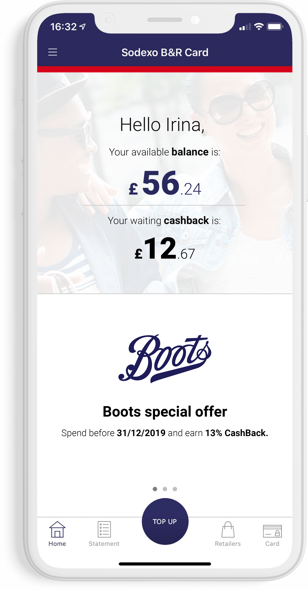
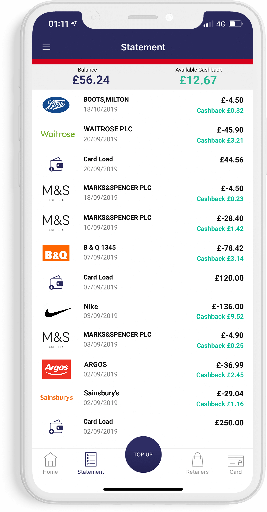
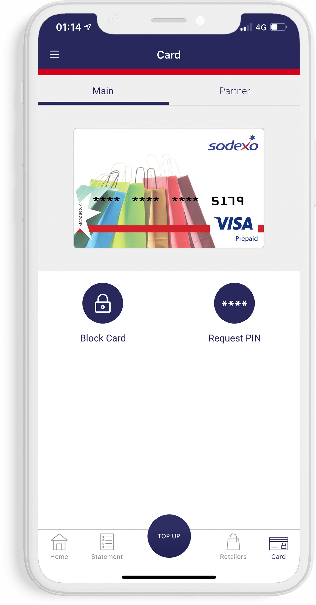
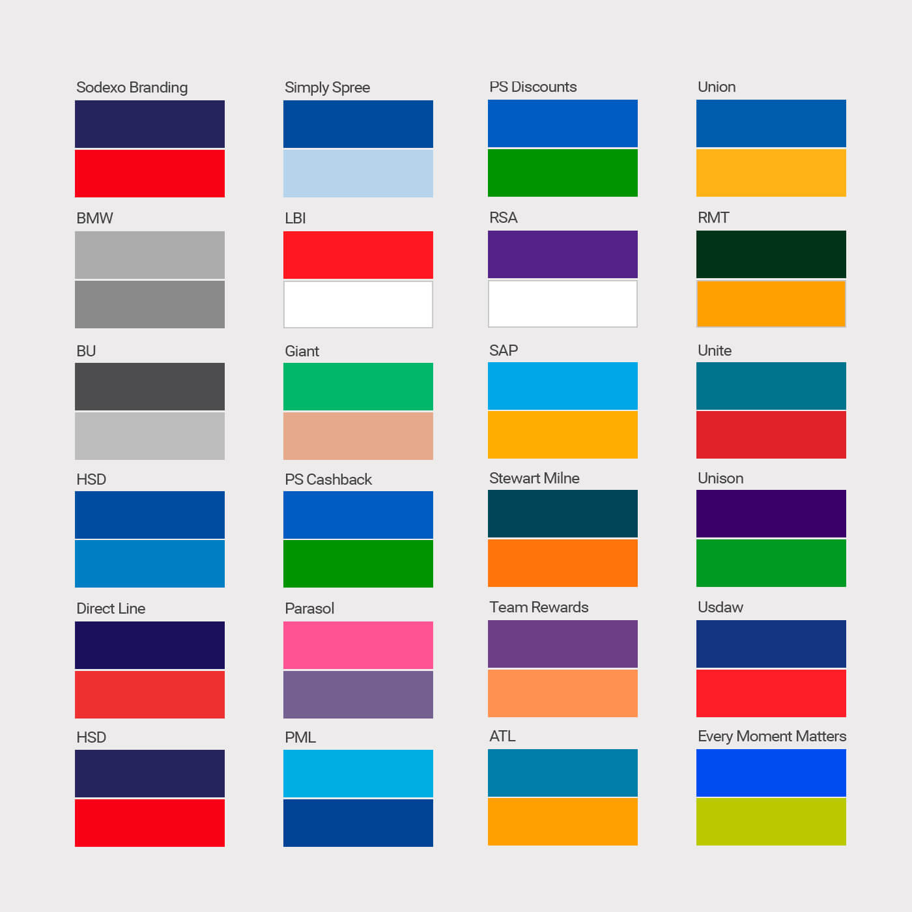
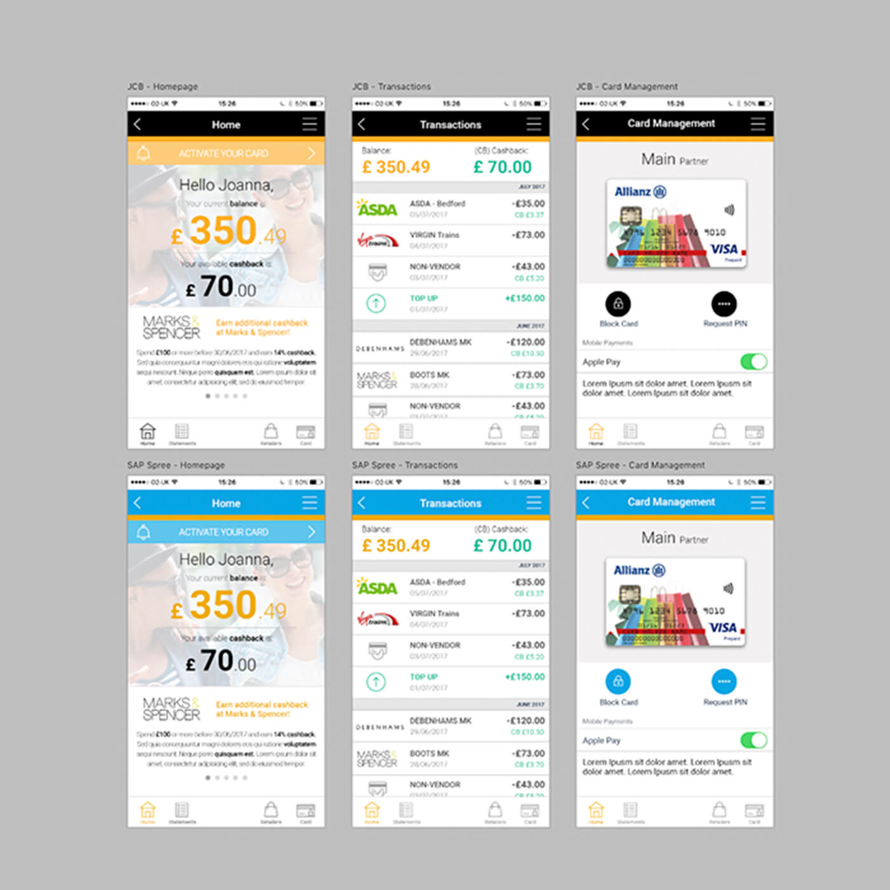

Spree is a CashBack app, created by Sodexo UK for its employees and beneficiaries. As a lead designer creating the UI and UX Spree visuals, this project was an incredible and satisfying learning curve for everybody involved. Personally, I use the Spree app any chance I get and it has changed my spending habits to being more CashBack oriented.
APP PRESENTATION
The Spree app uses the Spree card, which is an employee engagement perk offered with various engagement programmes at Sodexo. It boasts monthly CashBack offers with popular UK high-street retailers as well as features that make it easy to keep track of the spendings and CashBack earned.


Spree users can view the transactions they've made and the CashBack they've earned! Spree makes it easy for users to keep track of their spendings and CashBack earnings! On top of that, there is no risk of over-spending or going out of your budget!
The Spree app boasts multiple CashBack rates and offers with popular UK high-street retailers such as Boots, M&S, B&Q, Sainsbury's, Asda, Primark, Argos, Halfords, Waitrose, Nike, Topshop and many more.


Lost card? The Spree app allows its users to easily block and activate their card at any time! Forgot PIN number? Users can also request a text reminder of their PIN number.
pree is a Visa prepaid CashBack card from Sodexo that offers clients and its members the ultimate way to save while they spend, earning CashBack at some of the UK’s top retailers. Sodexo teams work closely with big name brands like Sainsbury’s, Argos and M&S to bring their clients some of the best CashBack rates available (up to 15%), so when their cardholders shop with their CashBack card, they get something in return.
While Sodexo dedicated account teams look after clients, the beneficiaries marketing team's role is to keep the excitement alive, to communicate new offers and CashBack rates to Spree cardholders and maintain their interest with high-impact campaigns.
ain goal was to digitise Sodexo's Spree Cashback card usage with the creation of an app, giving clients and their members more functionality in spending and using the Spree CashBack card as well as increase the number of CashBack card sign-ups month-on-month by 100% and, ultimately, to increase spend at Sodexo's 50+ partner CashBack retailers.
The app also needs to be available both on iOS and Android devices and needs to be easily rebrandable in terms of colours and logos for Sodexo's many clients.


pree was a collaborative effort between multiple departments at Sodexo: Product, IT and Creative, where I was lead designer for the project. Product identified the need for a CashBack app to support the Spree pre-paid card usage. This needed to be able to keep up with the modern spender on the go. As a lead designer for the new Spree app, together with the product team, we've conducted UX and UI research which materialised itself in a few design iterations, which lasted a few weeks. The most important caveat however, was that the app needed to be customisable to 20 other different Sodexo clients, all with different colour combinations and logos.
In short, we couldn't just roll out the existing app to them, as Sodexo wanted to make the app available to its clients with their own branded colours, as part of the various engagement platforms Sodexo manages monthly. This means the dev team needed to be able to change the logo and brand colours of the clients in the app at minimal time and cost. We decided in the end that a conservative templated approach was best suited for the design style of the app by trying out various colour scheme combinations to fit 20 colour variations throughout the app. Below are some early colour explorations.


he app was well-received and long-awaited by employees with numbers reaching over 3000 sign-ups in the first three weeks. The app today boasts over 8,000 users (beneficiaries) from over 12 Sodexo clients that need to be kept engaged every month, with new hot offers and CashBack rates.
In addition, a lot of these engagement campaigns are created in our Creative team, where we frequently create visual assets and graphics, ready to go out each month, as part of a specific campaign.
pree is a product that stands strong in the Sodexo offering both among its employees and other clients. It's also a great selling point for reward and recognitions programmes as well as the very many employee engagement campaigns my design team is a part of.
I, personally use this app whenever I can, especially when I'm out and about and it has changed my shopping habits, from not caring about CashBack at all, to purposefully looking for good rates, if I need to make a bigger purchase.


Over the past decade, the banking and financial services industry in Ghana has seen significant improvements in the quality of service delivery and the provision of superior financial products and packages.